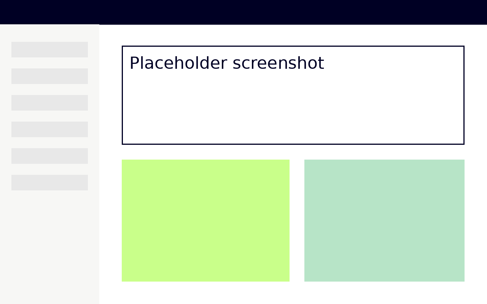

From Chatbots to Agentic AI
A Fast & Furious practical workshop on artificial intelligence in action
Meet your facilitator
Ivan Diaz
PhD candidate at Universidad Politécnica de Valencia, studying economics of agentic artificial intelligence
16 years in strategy consulting and artificial intelligence delivery
BCG, Bain & Company, Kearney, Deloitte
Teaches artificial intelligence prototyping, machine learning operations, project management, data visualization
Projects across retail, energy, infrastructure, and pharma
What you will learn
By the end, you know what agents can do, and how to direct them well
Explain the difference between a chatbot, a workflow, and an agent
Identify goal, tools, feedback loop, and guardrails in an agentic system
Explain why a vague prompt produces an unreliable or risky output
Write a simple spec with context, goal, criteria, constraints, evidence, output, guardrails, and a stop condition
Improve agent output by improving the brief, not by retrying randomly


Core agent concepts
| Concept | Student analogy | Practical meaning |
|---|---|---|
| Tool use | Brain plus hands | The system can search, calculate, browse, read, or call functions |
| Planning | GPS route | It breaks a goal into steps and may reroute |
| Goal-seeking | Mission, not question | It keeps working until it reaches the target or gets blocked |
| Feedback loop | Try, check, fix | It observes results and adapts |
| Guardrails | Brakes and seatbelt | It knows what it cannot do and when to ask |
Goal-seeking. The system is trying to complete a task, not just answer a question
AI system patterns
| Type | Planning | Tools | Goal-seeking | Guardrails |
|---|---|---|---|---|
| Chatbot | No | Usually no | No, it answers | Low action risk |
| Workflow | No, steps are fixed | Sometimes | No, it follows rules | Built into the process |
| Agent-like | Sometimes | Yes | Partly, for a narrow task | Depends on the setup |
| Agent | Yes | Yes | Yes, it pursues a task | Should ask or stop |
| Unsafe agent | Yes | Yes | Yes, but too freely | Missing or weak |
Agent-like means it has some agent properties, but not the full loop
The difference between an agent and an unsafe agent is what it is allowed to do
Chatbot, workflow, or agent?
| # | Example | Answer | Why this one |
|---|---|---|---|
| 1 | "Write a poem about Mars" | Chatbot | Clearest possible anchor: no ambiguity, sets the baseline fast |
| 2 | "Every time a new article is published, extract the title, date, and key finding, always in that order" | Workflow | It uses AI, but follows fixed steps with zero autonomy |
| 3 | "Check calendars, propose a meeting time, and ask before booking" | Agent | It uses tools, plans, and keeps human approval |
| 4 | "Search the web, read three sources, compare their credibility, and recommend the most reliable one" | Agent-like | This grey zone sparks debate, and the discussion is the learning |
| 5 | "An AI assistant notices your fridge is low on milk and places a grocery order without asking you" | Unsafe agent | It shows excessive agency: external action without permission |
Agents are not just smarter chatbots; they combine goals, tools, judgement, and limits
Your challenge
You are the agent designer. A student (like yourself) needs help deciding what to study. Your job is to tell the agent what to do so it can help them.
Scenario
Deliverables
- 3 best degree options with real universities
- A comparison across meaningful criteria
- A recommendation backed by evidence
- One reflection/ question the student must answer before choosing
One prompt. See how far you can get.
Safety boundary: No applications, emails, payments, forms, or account creation
You already have the agent... What you will tell it to do?
Write one prompt
Write the best prompt you can from the challenge brief
| Step | Action |
|---|---|
| 1 | Choose any AI platform you can access |
| 2 | Write and run one prompt |
| 3 | Save or screenshot the result |
A vague brief gives the agent room to guess
What was missing?
Look at your prompt and result. What did the agent have to guess?
| Question | Yes / No |
|---|---|
| Did I define the student profile? | Yes / No |
| Did I define what the best means? | Yes / No |
| Did I set constraints: country, language, duration, or prior coding experience? | Yes / No |
| Did I require evidence & sources? | Yes / No |
| Did I specify what the output should look like? | Yes / No |
| Did I say what the AI must not do? | Yes / No |
| Did I keep the final choice with the student? | Yes / No |
If the brief is unclear, the agent fills the gaps
Spec Driven Development (SDD)
Anatomy of Spec Driven Development
Give the agent a source of truth before asking it to act
A spec turns a vague request into instructions the agent can follow
Key takeaways
You already have the agent. The spec is the skill
Agents pursue goals, not just answers
Tools and planning create power, but also risk
Vague prompts force the AI to guess
A good spec defines context, goal, criteria, constraints, evidence, output, guardrails, and stop
Brief quality beats model size
Use the spec to keep the human in charge
Keep learning
Start here (for free)
Visual AI intuition
3Blue1Brown, Neural Networks
Visual intuition for neural networks, transformers, and how large language models work
Agent building
Hugging Face Agents Course
Hands-on path for tools, agent loops, frameworks, and projects
Spec-first workflows
DeepLearning.AI, Spec-Driven Development
Practical workflow for using specs to guide coding agents
Responsible AI
MIT Day of AI
High-school-friendly responsible AI literacy and hands-on curriculum
Agent concepts
DataCamp, Introduction to AI Agents
No-coding course on components, tool use, guardrails, and the Thought-Action-Observation loop
Spec Driven Development (SDD)
Martin Fowler, Spec Driven Development (SDD)
Deeper article on spec-first thinking and agentic development tools
"There are generally two types of LLM users: those that use it to learn everything, and those that use it so they don't have to learn anything." - Mark Cuban